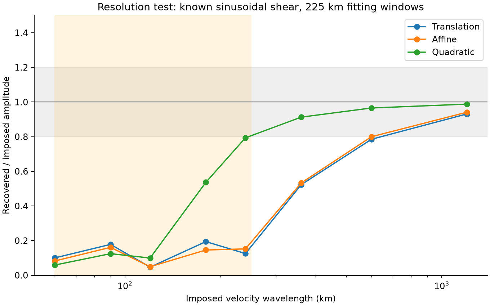

Analysis performed on Unity, 10 November 2026 (US Eastern). Observations: 2 February 2017. This is a newly computed north-polar benchmark on published mapped images, on published northern maps. The native two-pole reanalysis is tracked on the study-status page.
24 image pairs were processed with translation, affine and quadratic fits. The large-scale wind patterns agree closely across methods. Affine and quadratic vectors differ from the published TRACKER4 vectors by medians of 1.57 and 1.95 m/s, respectively. This tests the tracking calculation on shared imagery; it does not establish absolute wind accuracy. Disjoint image groups differ by about 15 m/s and have midpoint times separated by approximately eight minutes.

| Method | Accepted vectors | Median speed, m/s | Median reference difference, m/s | 90th percentile difference, m/s |
|---|---|---|---|---|
| affine | 11394 | 33.2 | 1.57 | 4.56 |
| quadratic | 11331 | 33.6 | 1.95 | 4.93 |
| translation | 11427 | 33.6 | 1.99 | 6.18 |
These are vector-difference magnitudes, not differences of scalar speeds. Each method has 11,811 candidate observations. Statistics count pair-specific vectors; overlapping windows and repeated observations are not independent samples. On the same acceptance mask for all three methods, median reference differences remain approximately 1.54 m/s (affine), 1.94 m/s (quadratic), and 1.96 m/s (translation). The reference was not used to initialize, select, regularize or tune the fits.
The new data are Parquet or compressed CSV. Keep only accepted=true for scientific use; rejected raw estimates are retained for audit. u_map_ms follows increasing stored column; v_map_ms follows minus stored row, the orientation of the published vector table. They are nominal map-plane components, not eastward/northward winds. Map origins are arbitrary, and the published cropped labels do not by themselves establish an absolute latitude/longitude grid.
The 48 geometrically controlled M-band maps from Ingersoll et al. were downloaded directly to Unity. The paired frames are n01a–n01l versus n03a–n03l, and n02a–n02l versus n04a–n04l: 24 same-letter pairs. Adjacent-letter cross-pairs are not included. Every pair uses its own image-label time difference, approximately 974 seconds. The maps have 15 km pixels; 15 × 15-pixel fitting windows span 225 km. The full-domain vector grid is 135 km, with no velocity gap-filling in the overview.
Translation fits two displacement coefficients; affine fits six; quadratic fits twelve. Fits are initialized by image correlation and refined through normalized image residuals, allowing local gain and offset changes. Quadratic curvature is regularized with the bundled tracker’s default penalty 0.001. No dynamical balance, SQG velocity, published wind or wind profile enters this estimation. The main implementation is the spatial-polynomial tracker supplied by juno-winds. A separate implementation from your earlier QuadraticOptical work was checked on synthetic motion and a small real-image patch.
Both directions require NCC ≥ 0.8, forward–reverse residual ≤ 0.5 pixel, texture eigenvalue ratio ≥ 0.03 and unregularized information condition < 10⁸; fits at the 14-pixel search bound are rejected. Finite support includes interpolation stencils and the search region. Thresholds are independent of published velocities and SQG.
| Method | Shared locations | Median difference, m/s | 90th percentile, m/s |
|---|---|---|---|
| affine | 3573 | 14.7 | 24.8 |
| quadratic | 3529 | 14.9 | 25.2 |
| translation | 3588 | 14.8 | 25.2 |
The two groups (n01/n03 and n02/n04) share no input image. Pair-specific velocities are aggregated by median at exactly shared map locations. The comparison has no offset removal or fitted alignment. The difference includes cloud evolution, actual wind evolution, viewing geometry and navigation errors, so it is not a direct estimate of random measurement uncertainty. It is nevertheless substantially larger than the same-image published-vector agreement.

Independent synthetic image generation tests translation, shear and quadratic deformation, including a brightness gain/offset change. A second set imposes sinusoidal shear at wavelengths 60–1,200 km. The figure shows amplitude recovery for 225 km windows. These controlled tests isolate estimator smoothing; they do not model JIRAM navigation errors, detector noise or cloud evolution. A revised noncommensurate sampling grid avoids accidental aliasing of the imposed test wave; no accuracy threshold was relaxed. The separately implemented original quadratic solver has a synthetic 90th-percentile displacement error below 0.05 pixel and a median real-patch difference of 0.085 pixel from the main quadratic solver.
Siegelman et al. compare directly tracked vorticity to a radiance-derived SQG estimate over 250–1,600 km. The initial dense tests used n01g/n03g and n02g/n04g on a 45 km vector grid with 135, 225 and 315 km fitting windows. Their shared rectangular footprint was only 1,260 × 630 km, so that design failed the spatial-support check. It is retained as a failed design, not used for SQG inference. A replacement design proposed the full two northern image groups on the 135 km vector grid, the 600–1,600 km band plus a broader 900–3,000 km sensitivity band, and n02/n03 as separate midpoint radiance mosaics. This design also failed the spatial-support gate before computing the comparison. The SQG estimate uses τ = −log10(I) and ζ̂ = −36 |k| τ̂, with k in radians/m and the paper’s N = 0.004 s⁻¹ and H = 9 km. Its amplitude and sign are fixed before comparison.
SQG has not been validated by this run. The dense two-pair patch shared only 1,260 × 630 km of rectangular support. The full-mosaic common rectangle was 1,485 × 810 km; a diagnostic closing of small mask gaps gave 1,620 × 810 km but only 88.9% original candidate coverage, below the predeclared 95% requirement. Both designs were rejected. No tracking–SQG correlation or spectral slope is reported from those unsupported domains.
This is a failure of the selected-pair comparison design, not a rejection of SQG. The full original PJ4 data may support a better construction: add adjacent-letter cross-pairs, build a denser common mosaic and assess its mask response, preferably after recalculating camera-corrected native geometry. The new dense velocity fields and window-size summaries remain available for that work. The rejection record is sqg_status.json.
The proposed Fourier calculation required a common rectangular patch with at least 25 nodes along each dimension, at least 95% measured coverage and a maximum missing-node radius of two grid points. It would plane-detrend and reflection-pad the fields and exclude six grid points at each edge. The data failed those prerequisites, so subsequent filtering and correlation results were not produced. No accuracy or coverage threshold was relaxed to force a result.
This calculation does not validate the ≈100 km convective energy-injection result or an energy cascade. Establishing that would require reliable velocities at those scales, propagation of camera/navigation errors, repeatability across more disjoint image groups and a separate energy-transfer analysis. Small-scale agreement of radiance and a radiance-derived flow can also inherit shared image structure. Results here are a direct-tracking consistency benchmark.
A direct inventory and binary-header audit of the 51.39 GB expanded JOVE archive found 42.48 GB of globe-map arrays, including 17.72 GB of blending weights and 8.25 GB of mapped radiance, plus 8.59 GB of rendered PNG images. The 82 PJ4 M-band source PNGs are 4096 × 2048 color-rendered maps. Their provenance identifies 535 native observations; those detector-image files are not embedded. The archive therefore contains scientific mapped radiance as well as display products, but it does not preserve separate detector frames for this correction. Crucially, its provenance and bundled acquisition code identify the public originals. All 535 referenced IDs were found in the PDS listing. We have now downloaded the full orbit04 image collection directly to Unity: 1,111 detector-image products and their labels (3,333 files, 277.19 MB), together with geometry kernels. Native geometry and correction checks are running. The historical benchmark below preserves the published mapped-image navigation and does not use the new detector correction.
The complete images, per-fit coefficients, accepted/rejected masks, dense fields and logs remain on Unity at the project’s Unity workspace. Only small derived tables, figures and code are copied locally. The original Drive ZIP is unchanged in its download directory.
The native PJ4 mirror has now been retrieved. The next calculation applies the fixed detector correction before projection, then assesses per-image pointing with image-disjoint validation. That would allow a consistent comparison with the new camera-corrected products. Until then, these results support using direct affine/quadratic tracking for a reproducibility benchmark but do not establish absolute or very-high-wavenumber wind accuracy.
New observational results: one analysis, with synthetic tests, a second solver check and disjoint-image repeatability. Imported maps retain their repository’s stated validation status. Judgment calls: focus new tracking on the north-polar region actually used by the papers; preserve published navigation for the benchmark; use same-letter pairs and conservative support checks; report smaller-scale SQG comparisons as exploratory; do not interpret divergence or compute energy flux from these fields.